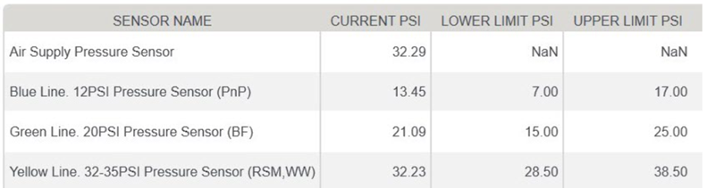

Checking Compressor and Check Valve Functionality without the Use of House Air Supply
This topic includes information about troubleshooting issues with the Reagent Storage Module (RSM) by checking compressor and check valve functionality without the use of house air supply.
Safety Reminder
Servicing the DxI 9000 instrument involves potential risks for pinch and puncture, electrical shock, and exposure to hazardous materials. You must mitigate these risks by taking appropriate countermeasures. See Safety for more information.
- In the Machine Control App go to MENU > Machine Control > Chassis > Chassis.Assembly > Chassis.Pneumatics.
- On the Action tab select SetAirCompressor
- Select state.
- Select Execute to turn on the compressor.
-
In the Console App go to
MENU > Tools > Diagnostics > Nonintrusive Diagnostics > Pneumatics Monitoring to open the Pneumatics Monitoring page, which will display air pressures

- Take notes or capture a screenshot to record air pressures.
- In the Machine Control app clear the state checkbox for SetAirCompressor.
- Select Execute to turn off the compressor.
- In the Console App on the Pneumatics Monitoring page, monitor the air pressure drop rates. Take note of the lower resting pressures and fast dropping pressures. Normally these pressures should be relatively stable within range and exhibit very gradual loss. First, determine whether the main YELLOW air supply line is losing pressure. If the main YELLOW line doesn’t lose air supply quickly but one of the other lines do, then it’s likely not a compressor or check valve issue. If the YELLOW line drops quickly, be sure the RSM Waste Door is closed.
- In Machine Control select the state checkbox for SetAirCompressor.
- Select Execute to turn on the compressor.
- Go to ReagentStorage > ReagentStorage.WasteDoor.Ejector.
- On the Action tab select PutState.
- Select state.
- Select Execute.
- Clear state.
- Select Execute.
- Select state.
- Select Execute.
- In the Console App on the Pneumatics Monitoring screen take notes of pressure changes.
- End the Diagnostic Session.
- Initialize the Instrument. See Initializing the Instrument for more information.
- Inspect all YELLOW line connections for proper seating.
- Monitor the YELLOW line pressure. If it drops quickly, you must replace the check valve.
-
Remove the check valve and plug in the compressor to check for a diaphragm leak. If the leak persists, rebuild the diaphragm or replace the compressor and the check valve.
NOTE: If you determine there is a faulty check valve, the compressor diaphragm will likely be faulty, too.
- Replace the deficient hardware, which may include the check valve, compressor diaphragm, accumulator jar, filter, reagent storage module waste door actuator, and/or T-valve. See the following topics for more information:
- Repeat this procedure to troubleshoot BLUE and GREEN line leaks.
- Troubleshoot to determine if there is a leaking Manifold Relief Valve.
- Troubleshoot to determine whether the pressure sensor leaks on the pneumatic interface board.
- Replace the pneumatic interface board if needed.
- Adjust manifold pressures as needed to specified pressures.
- In the Console App go to MENU > Tools > Diagnostics > Intrusive Diagnostics > Pneumatics Pressure Check to open the Pneumatics Pressure Check page and to test the pneumatics pressure.
- End Diagnostic Session.
- Initialize the Instrument. See Initializing the Instrument for more information.
- Proceed to check for pressure loss during a GREEN (Ready) status by monitoring modulating pressures in the low range and high range.
- Perform RSM Gripper Timing Calibration
- Complete the verification of service repair. See Verification of Service Repairsfor more information.
- Log out of the BeckmanAdmin account.
- Log in to use the LabUser account.